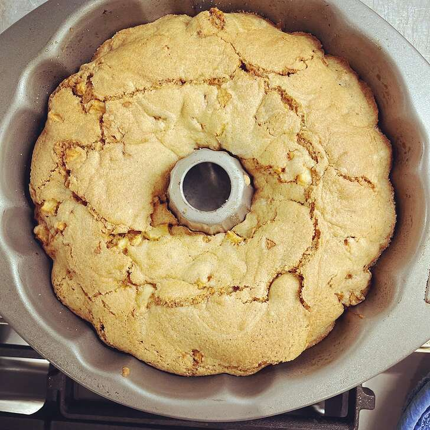

Apple Coffee Cake

An enjoyable nutritius breakfast "Apple Coffee Cake"
This is really easy and so very, very good. I like to add a dollop of vanilla yogurt on top of my piece of coffee cake. Yummy!
Ingredients
- cooking spray
- 1 tablespoon flour, or as needed
- ¼ cup butter, softened
- ¾ cup brown sugar
- 1 large egg
- ¼ cup sour cream
- ¼ cup vanilla yogurt
- 1 teaspoon vanilla extract
- 1 cup all-purpose flour
- ¾ teaspoon ground cinnamon
- ½ teaspoon baking soda
- ¼ teaspoon salt
- 2 cups diced Granny Smith apple
- ¼ cup brown sugar
- ¼ cup all-purpose flour
- 2 tablespoons butter
- ½ teaspoon ground cinnamon
Steps
-
- Preheat oven to 350 degrees F (175 degrees C).
- Spray an 8-inch square baking dish with cooking spray;
- dust with 1 tablespoon flour.
-
- Beat 1/4 cup butter and 3/4 cup brown sugar together with an electric mixer in a large bowl until light and fluffy.
- The mixture should be noticeably lighter in color.
- Beat egg into butter mixture.
- Add sour cream, vanilla yogurt, and vanilla extract to the mixture;
- beat to integrate.
-
- Stir 1 cup flour, 3/4 teaspoon cinnamon, baking soda, and salt together in a bowl;
- add to the butter mixture and beat to combine into a batter.
- Fold apples into the batter.
- Pour batter into prepared baking dish.
-
- Mix 1/4 cup brown sugar, 1/4 cup flour, 2 tablespoons butter, and 1/2 teaspoon cinnamon together in a bowl using a fork to achieve a crumbly consistency;
- sprinkle over the top of the batter.
-
- Bake in the preheated oven until a toothpick inserted into the center comes out clean, 35 to 40 minutes.
- Cool in the pan for 10 minutes before removing to cool completely on a wire rack.